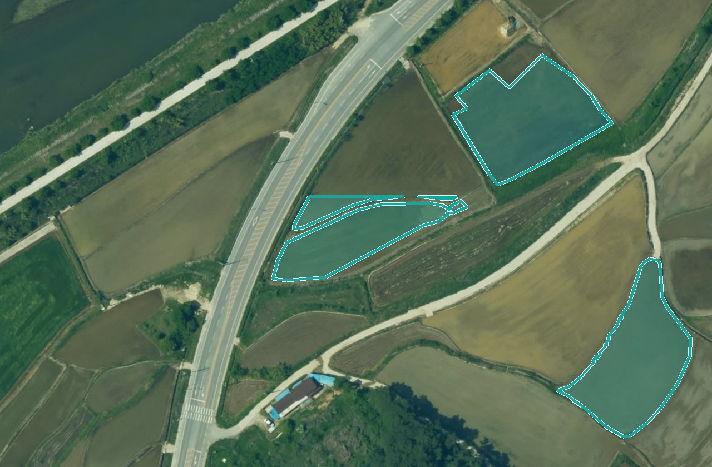

기관 정보
마크 · 이름 · 색 · 소개 글 · 서비스별 우리 담당자. 저장하면 메인과 모든 화면에 바로 반영됩니다. 메인 열기우리 기관 모습
마크그림이 없으면 글자 두 줄
남원GV그림 올리기PNG · JPG · 1MB 이하
플랫폼 이름
남원시 GeoVision 플랫폼14/30
약칭제목에서 기관색으로 강조
남원시
기관색
직접
✓ 글자가 잘 읽히는 색입니다
메인 소개 글로그인 전 첫 화면
제목두 줄까지 · 줄은 여기서 끊김
드론·항공 영상을 AI로 분석해
남원시 행정 업무를 돕습니다
남원시 행정 업무를 돕습니다
설명두 줄까지
우리 시가 받는 AI 분석 서비스를 한곳에서 확인합니다.
분석 결과 확인부터 보고서 작성까지 지원합니다.
분석 결과 확인부터 보고서 작성까지 지원합니다.
문의 전화
063-620-6114
서비스별 우리 담당자LX 직원이 요청을 받을 때 함께 봅니다
| 서비스 | 부서 | 담당자 | 연락처(선택) | |
|---|---|---|---|---|
| 영농관리 행정서비스 | 농정과 | 박서연 | 063-620-6114(대표) | 고치기 |
| 생활환경 위험요소 탐지 | 환경과 | 정하기 | 적지 않음 | 정하기 |
| 도로 안전관리 | 건설과 | 정하기 | 적지 않음 | 정하기 |
| 인파관리 | 관광과 | 정하기 | 적지 않음 | 정하기 |
담당자는 우리 기관 계정 가운데서 고릅니다. 연락처는 적지 않아도 되고, 적으면 LX 담당 직원에게만 보입니다.
저장되돌리기
저장한 사람과 시각이 기록됩니다.
기관 메인 미리 보기저장하면 이렇게 보입니다
남원GV남원시 GeoVision 플랫폼로그인
전북특별자치도 남원시
드론·항공 영상을 AI로 분석해
남원시 행정 업무를 돕습니다
우리 시가 받는 AI 분석 서비스를 한곳에서 확인합니다.
분석 결과 확인부터 보고서 작성까지 지원합니다.

운영첫 결과 전
생활환경 위험요소 탐지첫 결과 전
도로 안전관리✓ 마크 · 이름 · 색이 메인 · 내 서비스 · 로그인 화면에 함께 바뀝니다.
전북특별자치도 남원시대표전화 063-620-6114AI 분석 · 모델 개발과 갱신 — LX 한국국토정보공사